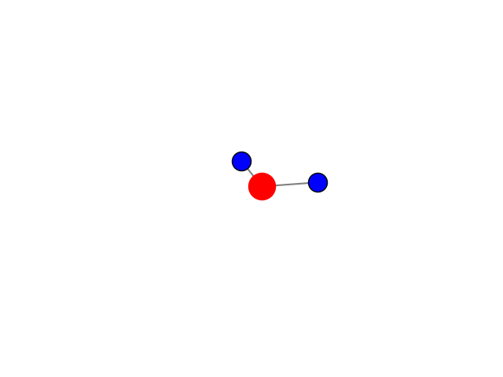

Evaluación de la calidad de agua en la Planta de Tratamiento del municipio de Cácota de Velasco, Norte de Santander.
Presentado por:
José Alejandro Vera Vera. Programa de Química,
Tutor: Ph.D. Luis Miguel Díaz. Universidad de Pamplona
Tutor: Ingeniera química Esmeralda Jaimes. Alcaldía de Cácota, Norte de Santander.
Pamplona, Norte de Santander, 2026.
CONTEXTO DEL PROBLEMA

"Evaluación fisicoquímica, microbiológica y estabilidad química del agua para consumo humano mediante IRCA, LSI y RSI."
Problema identificado.
- Existencia de diferencias entre calidad microbiológica y estabilidad química.
- Posible riesgo de corrosión y movilización metálica en la red de distribución.
JUSTIFICACIÓN
- El monitoreo tradicional se enfoca principalmente en parámetros fisicoquímicos y microbiológicos.
- El IRCA no evalúa estabilidad química del agua.
- Los índices LSI y RSI permiten evaluar riesgo de corrosión e incrustación.
- El estudio aporta herramientas para gestión preventiva de calidad del agua.
- Contribuye a mejorar vigilancia sanitaria y sostenibilidad de infraestructura.
OBJETIVOS
Objetivo general.
Evaluar la calidad del agua para consumo humano del sistema de abastecimiento del municipio de Cácota, Norte de Santander, mediante el análisis de parámetros fisicoquímicos, microbiológicos, en cumplimiento de la Resolución 2115 de 2007 y demás normativas vigentes en Colombia.
Objetivos específicos
- Evaluar la calidad del agua potable mediante la medición de parámetros fisicoquímicos y microbiológicos, comparando los resultados con la normativa vigente para verificar su aptitud para el consumo.
- Determinar la presencia de contaminantes en el agua, analizando la concentración de metales pesados mediante espectroscopia de absorción atómica.
ÁREA DE ESTUDIO
Municipio de Cácota
Fuentes hídricas evaluadas:
- Quebrada La Plata.
- Quebrada Santa Elena.
ESTRUCTURA GENERAL DEL ESTUDIO
El estudio se desarrolló en tres componentes principales:
1. Evaluación experimental de laboratorio.
2. Análisis histórico de datos IRCA.
Auto-Animate
El estudio se desarrolló en tres componentes principales:
1. Evaluación experimental de laboratorio.
-
Analisis en el laboratorio segun el manual Standard Methods for the Examination of Water and Wastewater.
-
Evaluación de parámetros fisicoquímicos y microbiológicos
-
Comprobacion del cumplimiento del Decreto 1575 de 2007 y Resolución 2115 de 2007.
2. Análisis histórico de datos IRCA.
-
Registros históricos IRCA 2010–2025.
-
Evaluación fisicoquímica y microbiológica.
-
Cálculo de índices LSI y RSI.
-
Evaluación de estabilidad química y corrosividad.
3. Modelado predictivo
-
Registros históricos mensual de pH y Cloro residual Enero 2024 hasta Agosto 2025.
-
Variables principales.
- pH.
- Cloro residual.
-
Correlaciones climaticas entre las diferentes variables.
-
Aplicación de modelo de regrasion lineal multiple.
TRABAJO EXPERIMENTAL DE LABORATORIO
Análisis fisicoquímicos:
- Conductividad.
- Dureza.
- Cloruros.
- Sulfatos.
- Nitritos.
- Hierro.
- Turbidez.
- Color.
Análisis microbiológicos:
- Coliformes totales.
- Coliformes fecales.
Resultado y valoración IRCA.
📄
Documento de Resultados en el laboratorio
Haga clic abajo para consultar la valoración oficial del IRCA
Ver PDF ↗
CALIDAD DEL AGUA CRUDA
Principales resultados
- Alta presencia de coliformes totales y fecales.
- Color aparente superior al límite normativo.
- Variabilidad en conductividad y mineralización.
- IRCA clasificado como “alto riesgo”.
Interpretación.
- Agua no apta para consumo sin tratamiento.
- Influencia de escorrentía y contaminación superficial.
CALIDAD DEL AGUA TRATADA
Resultados principales.
- Eliminación de coliformes totales y fecales.
- Disminución significativa del IRCA.
- Agua clasificada como “riesgo bajo”.
Hallazgos importantes.
- Cloro residual bajo.
- Persistencia de color aparente.
- Baja dureza y alcalinidad.
Interpretación.
- Mejora microbiológica.
- Posible vulnerabilidad química del sistema.
ANÁLISIS HISTÓRICO DE LOS DATOS IRCA
Base de datos analizada
- Registros históricos IRCA 2010–2025.
- Agua cruda y agua tratada.
Variables evaluadas.
- pH.
- Color.
- Conductividad.
- Turbidez.
- Dureza.
- Coliformes.
- Alcalinidad.
- Cloro residual.
Procesamiento realizado.
- Depuración y validación de datos.
- Eliminación de valores inconsistentes.
- Estadística descriptiva.
- Correlaciones.
- Series temporales.
Resultados históricos.
- Agua cruda: valores altos de IRCA.
- Agua tratada: reducción importante del riesgo sanitario.
Gráfico temporal IRCA 2010–2025.

Resultado principal.
El IRCA permitió identificar diferencias sanitarias entre agua cruda y agua tratada.
RESULTADOS PRINCIPALES DEL IRCA.
Agua cruda:
- Altas concentraciones microbiológicas.
- Elevado color aparente.
- Clasificación: “alto riesgo”.
Agua tratada:
- Reducción significativa del IRCA.
- Eliminación de coliformes.
- Clasificación: “riesgo bajo”.
Hallazgo importante.
El tratamiento mejoró la calidad sanitaria, pero no garantizó estabilidad química.
Ecuación de Regresion Lineal Múltiple para el agua cruda:
\[
\begin{aligned}
\text{pH}_{\text{cruda}} = & 6.768 - 0.00009[\text{Cloruros}] + 0.0817[\text{Cloro Residual}] - 0.00105[\text{Color}] \\
& - 0.00404[\text{Alcalinidad}] + 0.0632[\text{Fosfatos}] - 0.00144[\text{Turbidez}] \\
& + 0.0334[\text{Temperatura}] + 0.00150[\text{IRCA}] + \varepsilon \\
\end{aligned}
\]
ANÁLISIS DE pH Y CLORO RESIDUAL
¿Por qué se seleccionaron?
pH.
- Variable clave para estabilidad química.
- Influye en corrosión y solubilidad metálica.
Cloro residual.
- Indicador de desinfección.
- Fundamental para control microbiológico.
Análisis realizados.
- Limpieza y validación de datos.
- Correlaciones Pearson y Spearman.
- Modelos predictivos.
- Series temporales.
- Machine Learning.
MODELOS PREDICTIVOS
Resultados principales.
- Gradient Boosting presentó mejor desempeño.
- Mejor capacidad predictiva para cloro residual.
- Limitada capacidad explicativa para pH.
Interpretación.
- Existen variables operacionales no incluidas.
- El sistema presenta comportamiento no lineal.
El cálculo de LSI y RSI
Son los dos métodos químicos estándar utilizados para evaluar la estabilidad del agua.
El cálculo de LSI y RSI se realizó utilizando temperatura (°C), sólidos disueltos totales estimados a partir de la conductividad eléctrica, alcalinidad total y dureza total expresada como CaCO₃. Debido a la ausencia de datos históricos de dureza cálcica, se empleó la dureza total como aproximación para la estimación de la estabilidad química del agua.
\[
\begin{aligned}
\text{LSI} &= \text{pH} - \text{pH}_s && \small \text{(Índice de Saturación de Langelier )} \\
\text{RSI} &= 2(\text{pH}_s) - \text{pH} && \small \text{(Índice de Estabilidad de Ryznar)}\\
\end{aligned}
\]
\[
\begin{aligned}
\text{pH}_s &= (9.3 + A + B) - (C + D) && \small \text{(pH de saturación)} \\[0.6em]
%
\small A &\small= \small \frac{\log_{10}(\text{TDS}) - 1}{10} && \small \text{(Factor de Sólidos Disueltos Totales)} \\
\small B &\small= \small -13.12 \log_{10}(T + 273) + 34.55 && \small \text{(Factor de Temperatura)} \\
\small C &\small= \small \log_{10}(\text{Ca}^{2+} \text{ como } \text{CaCO}_3) - 0.4 && \small \text{(Factor de Dureza Cálcica)} \\
\small D &\small= \small \log_{10}(\text{Alcalinidad como } \text{CaCO}_3) && \small \text{(Factor de Alcalinidad Total)}
\end{aligned}
\]
ESTIMACIÓN DE Sólidos disueltos totales (TDS)
Relación utilizada.
\[
\begin{aligned}
\text{TDS} &= (0.5 a 0.9) × Conductividad && \small \text{(Solidos totales)} \\[0.6em]
\end{aligned}
\]
El factor 0.65 es aceptado.
Resultados.
Agua cruda:
- Mayor mineralización.
- TDS hasta >300 mg/L.
Agua tratada:
- Baja mineralización.
- TDS generalmente <25 mg/L.
Interpretación.
- Baja capacidad amortiguadora.
- Mayor potencial corrosivo.
ÍNDICE DE LANGELIER (LSI)
¿Qué evalúa?
- Saturación respecto al carbonato de calcio.
- Tendencia corrosiva o incrustante.
Resultados.
Agua cruda:
- LSI entre -2.55 y 0.68.
- Predominio corrosivo.
Agua tratada:
- LSI hasta -3.90.
- Mayor agresividad química.
Interpretación.
- Agua subsaturada en CaCO3.
- Riesgo de corrosión interna.
ÍNDICE DE RYZNAR (RSI)
¿Qué evalúa?
Probabilidad de corrosión en condiciones reales.
Resultados.
Agua tratada:
- RSI hasta 14.4.
- Clasificación: altamente corrosiva.
Conclusión.
La estabilidad química del agua tratada es deficiente.
RELACIÓN ENTRE CORROSIÓN Y METALES
Metales estudiados
- Cobre (Cu).
- Manganeso (Mn).
- Cadmio (Cd).
- Cromo (Cr).
Factores asociados.
- Bajo pH.
- Baja alcalinidad.
- Baja dureza.
- Baja mineralización.
Impactos potenciales.
- Deterioro de infraestructura.
- Alteraciones organolépticas.
- Riesgo sanitario a largo plazo.
DISCUSIÓN GENERAL
Con los datos IRCA.
- Se identificó reducción del riesgo sanitario.
Con pH y cloro residual.
- Se observaron relaciones con variables ambientales y operacionales.
Con análisis de laboratorio.
Se detectó comportamiento eficiente en el tratamiento del agua.
Conclusión técnica.
La calidad microbiológica adecuada no implica estabilidad química del sistema.
CONCLUSIONES
- El tratamiento disminuyó significativamente el IRCA.
- El pH presentó estabilidad moderada y limitada capacidad predictiva.
- El cloro residual mostró alta sensibilidad operacional.
- El agua tratada presentó baja alcalinidad y baja dureza.
- Los índices LSI y RSI mostraron comportamiento corrosivo.
- El sistema podría favorecer liberación secundaria de metales.
- El sistema podría favorecer liberación secundaria de metales.
- El IRCA no refleja completamente estabilidad química del agua.
- Se requiere complementar IRCA con indicadores de estabilidad química.
RECOMENDACIONES
- Fortalecer monitoreo de alcalinidad, dureza y cloro residual.
- Implementar control de estabilidad química.
- Incorporar LSI y RSI en vigilancia sanitaria.
- Evaluar directamente metales pesados en red.
- Aplicar sistemas predictivos y alertas tempranas.
CIERRE
La evaluación integral del agua potable debe incluir:
- Calidad microbiológica.
- Calidad fisicoquímica.
- Estabilidad química.
- Riesgo de corrosión en redes de distribución.